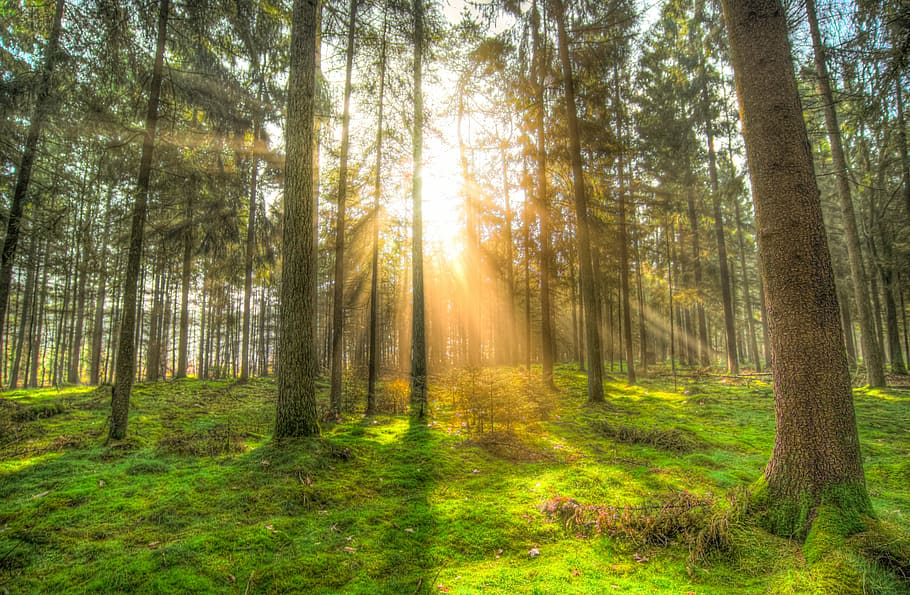
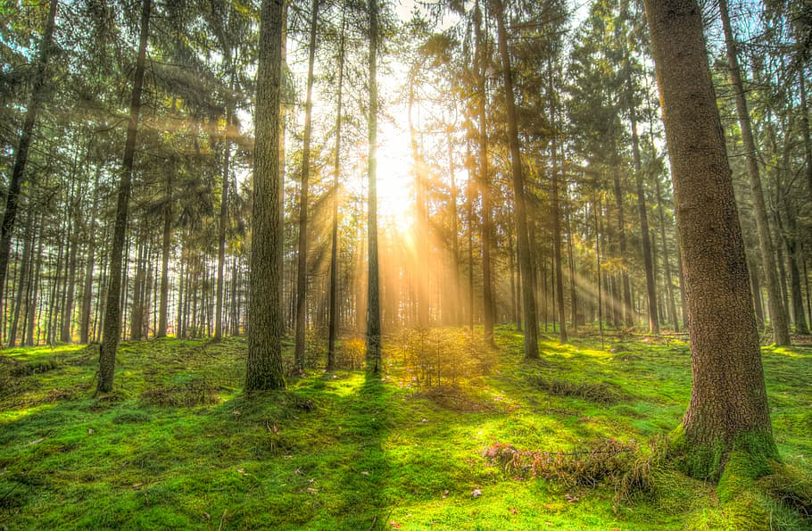

Darika Samak mark as done Listing on Product Hunt so that we can reach as many potential users
Emilee Simchenko commented on Account for teams and personal in bottom style
During a project build, it is necessary to evaluate the product design and development against project requirements and outcomes
Darika Samak uploaded 4 files on An option to search in current projects or in all projects


 
